Synopsis
Rehearsal for Expected Futures is a mixed-media film combining 3D animation, live-action footage and photogrammetric scans of papier-mâché objects. It takes its starting point from two scientific studies using similar mathematical models to describe mayonnaise and lava flows. The film follows this bizarre equivalence to its logical conclusion, imagining a world in which mayo and lava begin to behave as though they were the same material.
Structured as a dialogue between two characters, the work explores reduction as a way of knowing, drawing unexpected parallels between scientific simulation and children’s play. Rather than simply anticipating possible futures, computational models emerge as cultural practices that participate in constructing them.
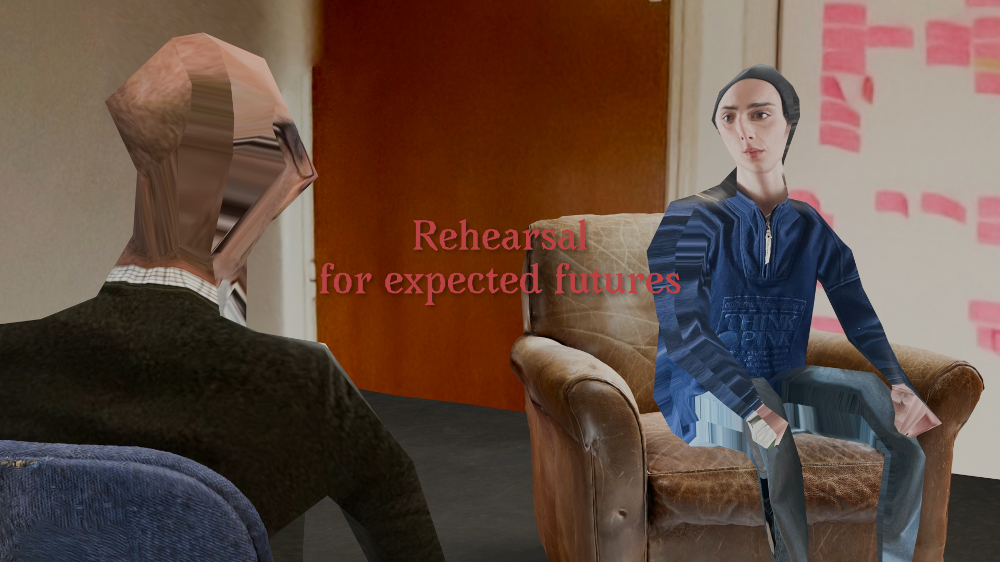
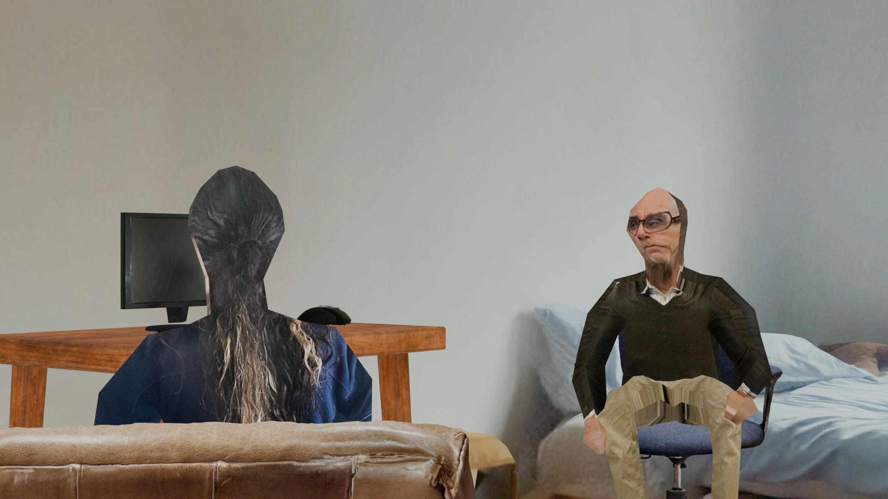
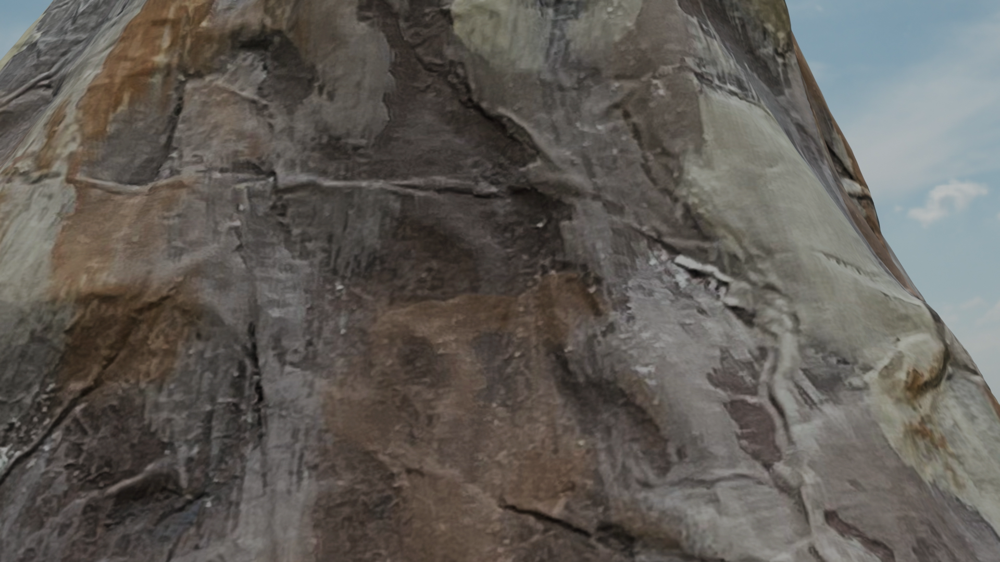
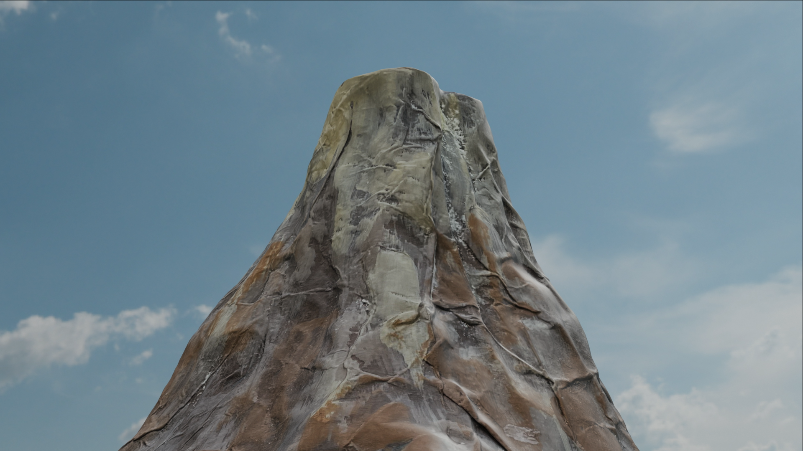
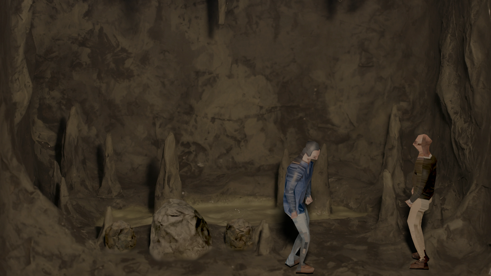
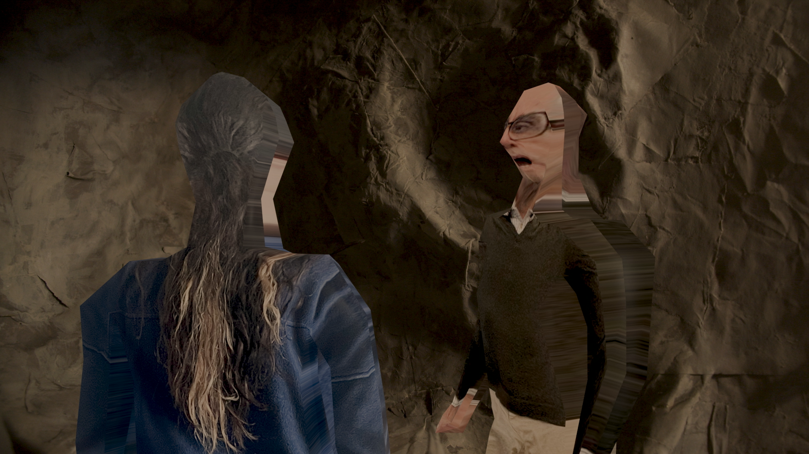
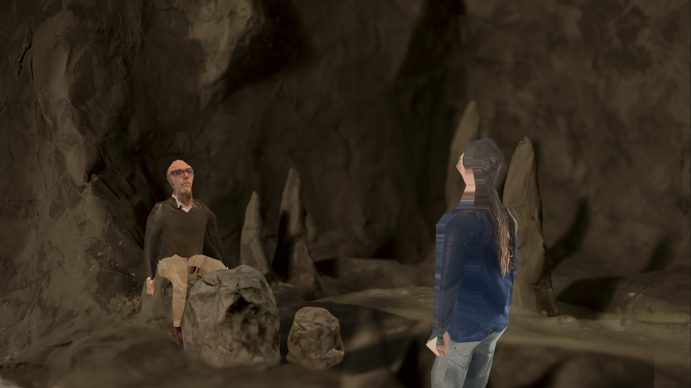
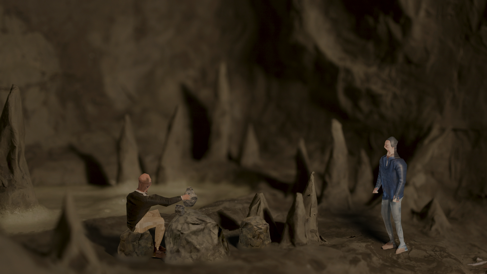
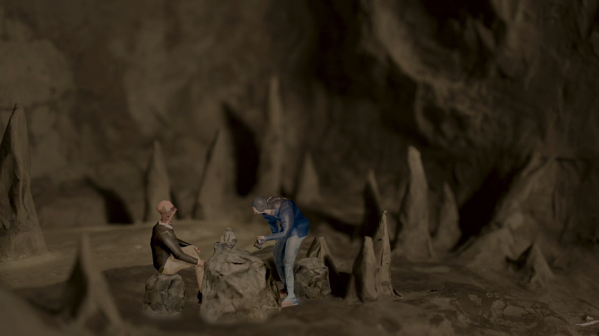
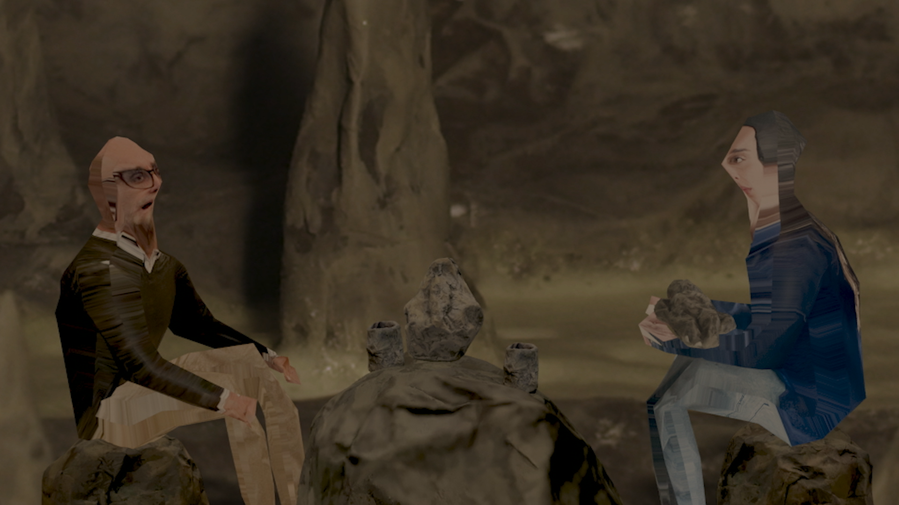
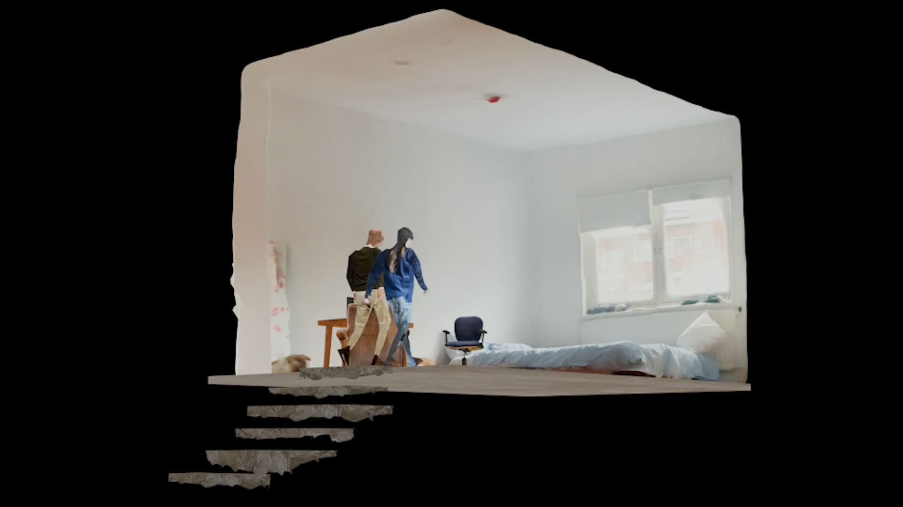
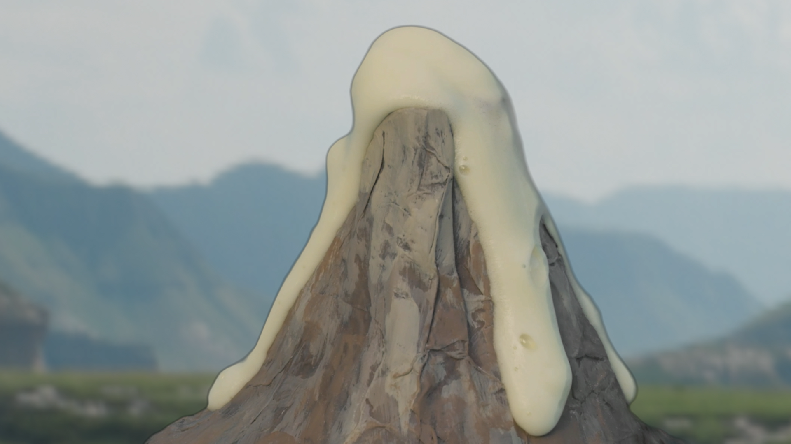
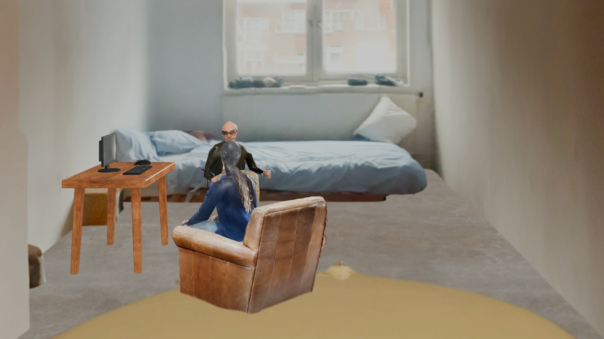
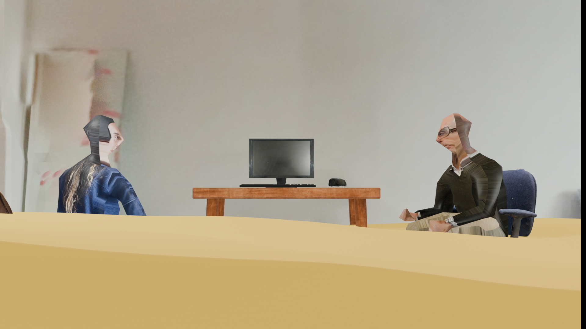